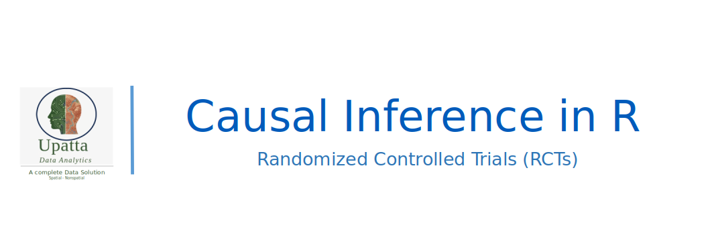
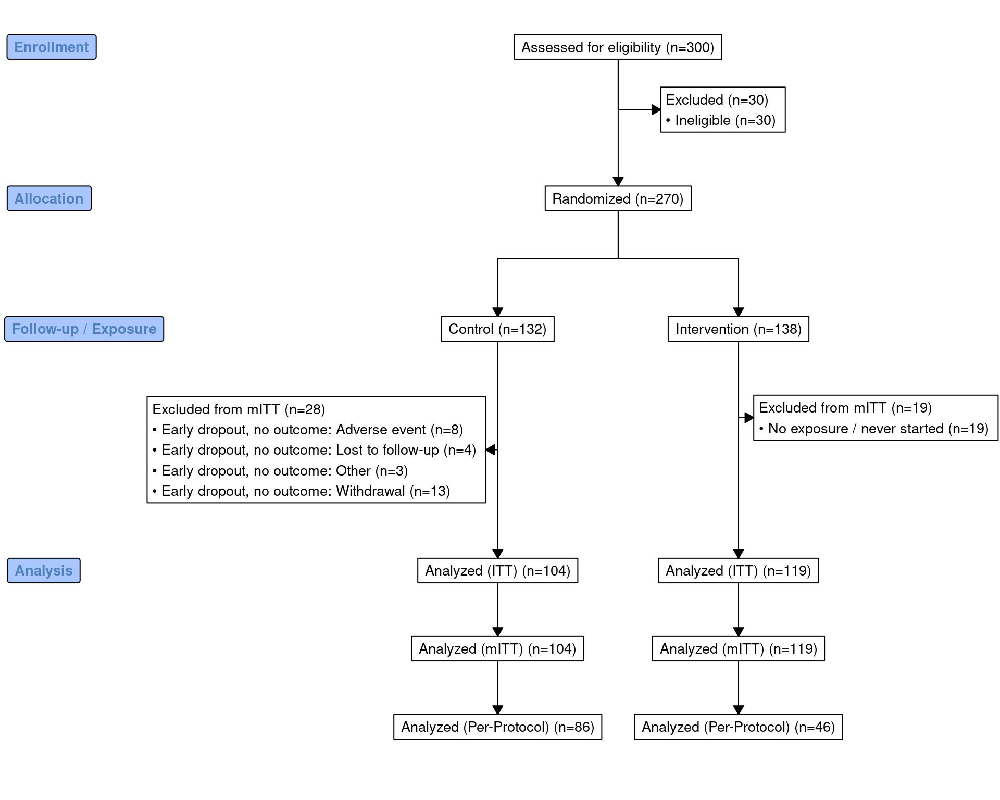
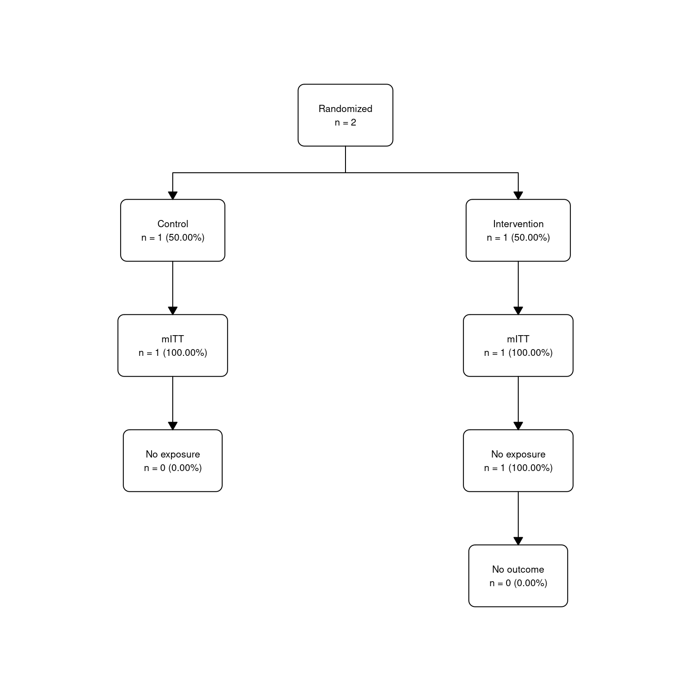

Code
packages <- c(
'DiagrammeR',
'consort',
'dplyr',
'flowchart',
'ggconsort',
'table1',
'tidyverse'
)

Implementation phase of RCTs refers to the period after the randomization process has been completed and the intervention is being delivered to the participants. This phase is crucial for ensuring that the study is conducted according to the protocol and that the data collected is reliable and valid. During the implementation phase, researchers must monitor the delivery of the intervention to ensure that it is being administered as intended. This may involve training staff, providing resources, and addressing any challenges that arise during the implementation process. This tutorial will guide you through the implementation phase of RCTs using R programming language.
Delivering the intervention per protocol—that is, exactly as specified in the study protocol—is a fundamental component of rigorous clinical trial conduct. This is often evaluated using a per-protocol analysis population, which includes only participants who sufficiently adhered to the planned intervention.
Equally important is the systematic tracking of trial conduct indicators, including:
Together, these elements are critical for:
In R, these aspects can be systematically addressed through:
This structured approach supports reproducible analysis and transparent reporting of randomized trials.
packages <- c(
'DiagrammeR',
'consort',
'dplyr',
'flowchart',
'ggconsort',
'table1',
'tidyverse'
)#| warning: false
#| error: false
# Install missing packages
new_packages <- packages[!(packages %in% installed.packages()[,"Package"])]
if(length(new_packages)) install.packages(new_packages)
devtools::install_github("tgerke/ggconsort")# Load packages with suppressed messages
invisible(lapply(packages, function(pkg) {
suppressPackageStartupMessages(library(pkg, character.only = TRUE))
}))# Check loaded packages
cat("Successfully loaded packages:\n")Successfully loaded packages: [1] "package:lubridate" "package:forcats" "package:stringr"
[4] "package:purrr" "package:readr" "package:tidyr"
[7] "package:tibble" "package:ggplot2" "package:tidyverse"
[10] "package:table1" "package:ggconsort" "package:flowchart"
[13] "package:dplyr" "package:consort" "package:DiagrammeR"
[16] "package:stats" "package:graphics" "package:grDevices"
[19] "package:utils" "package:datasets" "package:methods"
[22] "package:base" We simulate a simple two-arm RCT dataset (n = 300 randomized) with:
id: Participant IDarm: Treatment arm (“Control” or “Intervention”)eligible: Was eligible at screening? (for exclusions)adherence: Proportion of intervention sessions completed (0-1; NA if control or dropout)dropout: Did the participant drop out? (Yes/No)dropout_reason: Reason if dropout (e.g., “Lost to follow-up”, “Adverse event”, “Withdrawal”)protocol_deviation: Type of deviation (None, “Missed visit”, “Incorrect dose”, “Other”)outcome: Primary outcome (continuous, e.g., score at end of study; NA if dropout)This simulate dataset has realistic patterns: higher dropouts in one arm, adherence mostly >80% in intervention, some deviations.
set.seed(123)
n <- 300
df <- data.frame(
id = 1:n,
randomized = TRUE,
arm = sample(c("Control", "Intervention"), n, replace = TRUE, prob = c(0.5, 0.5)),
eligible = rbinom(n, 1, 0.9) == 1, # 10% ineligible example
adherence = ifelse(runif(n) < 0.85, runif(n, 0.6, 1), runif(n, 0, 0.6)), # Mostly high adherence
dropout = rbinom(n, 1, 0.15) == 1,
protocol_deviation = sample(c("None", "Missed visit", "Incorrect dose", "Other"), n, replace = TRUE, prob = c(0.8, 0.1, 0.05, 0.05))
)
# Add dropout reasons and make outcome missing if dropout
df <- df |>
mutate(
dropout_reason = ifelse(dropout, sample(c("Lost to follow-up", "Adverse event", "Withdrawal", "Other"), sum(dropout), replace = TRUE), NA),
adherence = ifelse(arm == "Control" | dropout, NA, adherence), # No adherence for control/dropouts
outcome = rnorm(n, mean = ifelse(arm == "Intervention", 10, 5), sd = 3),
outcome = ifelse(dropout, NA, outcome)
) |>
glimpse()Rows: 300
Columns: 9
$ id <int> 1, 2, 3, 4, 5, 6, 7, 8, 9, 10, 11, 12, 13, 14, 15, …
$ randomized <lgl> TRUE, TRUE, TRUE, TRUE, TRUE, TRUE, TRUE, TRUE, TRU…
$ arm <chr> "Intervention", "Control", "Intervention", "Control…
$ eligible <lgl> TRUE, TRUE, TRUE, TRUE, TRUE, TRUE, TRUE, TRUE, TRU…
$ adherence <dbl> NA, NA, 0.9409458, NA, NA, 0.8045258, NA, NA, NA, 0…
$ dropout <lgl> TRUE, TRUE, FALSE, FALSE, FALSE, FALSE, FALSE, FALS…
$ protocol_deviation <chr> "None", "Missed visit", "None", "None", "None", "No…
$ dropout_reason <chr> "Adverse event", "Adverse event", NA, NA, NA, NA, N…
$ outcome <dbl> NA, NA, 8.99698584, 4.68332027, 2.80847098, 15.7151…We can create summary tables to describe adherence, dropouts, and protocol deviations by treatment arm.
Or with dplyr for custom table:
df |>
group_by(arm) |>
summarise(
n_randomized = n(),
n_dropout = sum(dropout),
pct_dropout = round(n_dropout / n_randomized * 100, 1),
n_deviation = sum(protocol_deviation != "None"),
pct_deviation = round(n_deviation / n_randomized * 100, 1),
median_adherence = median(adherence, na.rm = TRUE) * 100, # % for intervention arm
.groups = "drop"
)# Dropout reasons by arm
table(df$arm, df$dropout_reason, useNA = "ifany")
Adverse event Lost to follow-up Other Withdrawal <NA>
Control 8 4 5 13 115
Intervention 6 2 9 3 135# Protocol deviations by arm
table(df$arm, df$protocol_deviation)
Incorrect dose Missed visit None Other
Control 5 14 117 9
Intervention 8 11 128 8In RCTs, defining analysis populations is critical for valid inference. Common populations:
ITT (Intention-to-Treat): All randomized, regardless of adherence/deviations/dropouts.Per-Protocol (PP): Delivered per protocol (high adherence, no major deviations, completed study).Modified ITT (mITT): Randomized + received at least some intervention + baseline data.Example: Define per-protocol flag (e.g., adherence >= 0.8, no major deviation, no dropout)
The ITT population includes all randomized participants, regardless of adherence, protocol deviations, or dropout status.
The per-protocol population typically includes participants who:
Received the assigned intervention
Adhered sufficiently
Had no major protocol deviations
Completed follow-up
df <- df |>
mutate(
per_protocol = (arm == "Control" | (!is.na(adherence) & adherence >= 0.8)) &
(protocol_deviation == "None") & !dropout
)
# Summary
df |> count(per_protocol)The modified ITT (mITT) population is a common compromise between full ITT and strict per-protocol analysis. It typically includes:
All randomized participants who
Received at least some of the assigned intervention (or at least one dose/session), and
Have at least one post-baseline assessment (or outcome measurement), and
Sometimes: were confirmed eligible after randomization (post-randomization eligibility check)
mITT is frequently used in trials where:
We’ll define mITT with these practical rules (you can adjust based on your protocol):
Randomized (everyone starts here)
Received at least minimal intervention:
Intervention arm: adherence > 0 (or ≥ some minimal threshold, e.g., ≥10%)
Control arm: usually assumed to have “received” usual care unless specified otherwise
Has at least one outcome value (i.e., not missing primary outcome due to dropout very early)
Optionally: eligible at baseline (post-randomization check)
df <- df |>
mutate(
# Minimal exposure: for intervention = any adherence > 0; for control = always TRUE
minimal_exposure = (arm == "Control") | (!is.na(adherence) & adherence > 0),
# Has evaluable outcome
has_outcome = !is.na(outcome),
# Optional: post-randomization eligibility confirmed
confirmed_eligible = eligible, # in real trials this might come from central review
# mITT flag
mitt = minimal_exposure & has_outcome & confirmed_eligible,
# Also keep the previous ones for comparison
itt = TRUE, # everyone randomized
per_protocol = (arm == "Control" | (!is.na(adherence) & adherence >= 0.8)) &
(protocol_deviation == "None") & !dropout
)
# Summary
df |> count(mitt)df |>
summarise(
.by = arm,
N_randomized = n(),
N_ITT = sum(itt),
N_mITT = sum(mitt),
N_per_protocol = sum(per_protocol),
pct_mITT = round(mean(mitt) * 100, 1),
pct_per_protocol = round(mean(per_protocol) * 100, 1),
median_adherence_mITT = round(median(adherence[mitt & arm == "Intervention"], na.rm = TRUE) * 100, 1)
)CONSORT (Consolidated Standards of Reporting Trials) is an evidence-based, minimum set of recommendations for reporting randomized controlled trials (RCTs). Developed by a group of scientists, clinicians, and statisticians, CONSORT aims to improve the transparency, completeness, and reliability of RCT reports so that readers can critically appraise and interpret trial findings.
Poorly reported trials can mislead clinicians, policymakers, and patients—leading to inappropriate treatments or wasted research funding. CONSORT combats this by providing a standardized framework for clear and honest reporting.
| Problem Without CONSORT | How CONSORT Helps |
|---|---|
| Unclear randomization method → selection bias | Requires details on sequence generation & allocation concealment |
| No mention of dropouts → overoptimistic results | Mandates flow diagram and reasons for discontinuation |
| Primary outcome changed after data collection → “p-hacking” | Requires pre-specification of outcomes and analysis plan |
| Incomplete reporting of harms | Requires systematic reporting of adverse events |
| Poor description of interventions → irreproducibility | Demands precise, replicable intervention protocols |
A structured list covering all essential aspects of an RCT report:
| Section | Key Items |
|---|---|
| Title & Abstract | Identify study as an RCT; include key elements (participants, interventions, outcomes) |
| Introduction | Scientific background, specific objectives, and pre-specified hypotheses |
| Methods | • Trial design (e.g., parallel, crossover) • Eligibility criteria • Interventions (precisely described) • Outcomes (primary/secondary, timing) • Sample size calculation • Randomization method (sequence generation, allocation concealment) • Blinding (who was blinded?) • Statistical methods |
| Results | • Participant flow (numbers screened, randomized, lost to follow-up) • Baseline data (table of characteristics by group) • Numbers analyzed (for each outcome) • Outcome results (effect estimates with confidence intervals) • Harms/adverse events |
| Discussion | Interpretation in context of existing evidence, limitations, generalizability |
| Other Information | Registration number, protocol availability, funding source, conflicts of interest |
A visual summary of participant progress through the trial phases: - Enrolled → Assessed for eligibility
- Randomized → Allocated to groups
- Received intervention / Lost to follow-up / Discontinued
- Analyzed (Full Analysis Set, Per-Protocol Set)
consort PackageUsing the consort package, we can create a CONSORT flow diagram to visualize participant flow through the trial phases.
The consort package is solid but limited in aesthetics. For more flexible, publication-quality diagrams, consider:
ggconsort (ggplot2-based, highly customizable)
flowchart package (tidyverse-friendly, easy modifications)
First, prepare data in the required format:
#devtools::install_github("tgerke/ggconsort")
library(ggconsort)
library(consort)
# 1. Prepare the data (make sure arm is kept as-is)
df_consort <- df %>%
mutate(
trialno = id,
# Enrollment exclusion
excl_enroll = ifelse(!eligible, "Ineligible", NA_character_),
# Follow-up / mITT exclusions — combined into one column
excl_followup = case_when(
!minimal_exposure ~ "No exposure / never started",
dropout & is.na(outcome) ~ paste("Early dropout, no outcome:", dropout_reason),
TRUE ~ NA_character_
),
# Main analysis boxes (always shown)
analyzed_itt = "Analyzed (ITT)",
analyzed_mitt = ifelse(mitt, "Analyzed (mITT)", NA_character_),
analyzed_pp = ifelse(per_protocol, "Analyzed (Per-Protocol)", NA_character_)
)# 2. Now build the plot – arm MUST be in orders
g <- consort_plot(
data = df_consort,
orders = c(
trialno = "Assessed for eligibility",
excl_enroll = "Excluded",
arm = "Randomized", # ← this line is required
excl_followup = "Excluded from mITT",
analyzed_itt = "Analyzed (ITT)",
analyzed_mitt = "Analyzed (mITT)",
analyzed_pp = "Analyzed (Per-Protocol)"
),
side_box = c("excl_enroll", "excl_followup"),
allocation = "arm", # ← tells package to split by arm
labels = c("1" = "Enrollment",
"2" = "Allocation",
"3" = "Follow-up / Exposure",
"4" = "Analysis"),
cex = 0.85
)
# Display
plot(g)
DiagrammeR for Custom Flow DiagramsFor more customized diagrams, you can use the DiagrammeR package to create flowcharts manually.
library(DiagrammeR)
graph <- grViz("
digraph consort_flow {
node [shape = box, style = filled, color = lightgrey]
A [label = 'Assessed for eligibility (n=300)']
B [label = 'Excluded (n=30)\\n- Not meeting criteria (n=20)\\n- Declined to participate (n=10)']
C [label = 'Randomized (n=270)']
D [label = 'Allocated to Control (n=135)']
E [label = 'Allocated to Intervention (n=135)']
F [label = 'Lost to follow-up (n=15)']
G [label = 'Discontinued intervention (n=10)']
H [label = 'Analyzed (ITT) (n=135)']
I [label = 'Analyzed (ITT) (n=135)']
J [label = 'Analyzed (mITT) (n=120)']
K [label = 'Analyzed (mITT) (n=115)']
A -> B -> C
C -> D -> F -> H
C -> E -> G -> I
D -> J
E -> K
}
")
graphflowchart Package for Tidy Diagrams# install.packages("flowchart")
library(dplyr)
library(flowchart)
# 1. Prepare summary data (this should already work from your previous steps)
flow_data <- df %>%
group_by(arm) %>%
summarise(
n_randomized = n(),
n_mitt = sum(mitt, na.rm = TRUE),
n_per_protocol = sum(per_protocol, na.rm = TRUE),
n_no_exposure = sum(!minimal_exposure, na.rm = TRUE),
n_no_outcome = sum(!has_outcome & minimal_exposure, na.rm = TRUE),
.groups = "drop"
)
# Re-build the flowchart (minimal version)
fc <- flow_data %>%
as_fc(
label = "Randomized",
text_pattern = "{label}\nn = {n}"
) %>%
fc_split(
var = arm,
text_pattern = "{label}\nn = {n} ({perc}%)"
) %>%
fc_filter(
n_mitt > 0,
label = "mITT",
text_pattern = "{label}\nn = {n} ({perc}%)"
) %>%
fc_filter(
n_no_exposure > 0,
label = "No exposure",
direction = "right",
text_pattern = "{label}\nn = {n} ({perc}%)"
) %>%
fc_filter(
n_no_outcome > 0,
label = "No outcome",
direction = "right",
text_pattern = "{label}\nn = {n} ({perc}%)"
)
# Plot — try these one by one until one works
plot(fc) # ← most reliable
The implementation phase of Randomized Controlled Trials (RCTs) is critical for ensuring the integrity and validity of the study. By delivering the intervention per protocol, tracking adherence, dropouts, and protocol deviations, researchers can assess the internal validity of the trial and interpret the results accurately. Using R programming language, we can systematically manage these aspects through data cleaning, summary statistics, and visualizations such as CONSORT flow diagrams. This structured approach supports reproducible analysis and transparent reporting of RCTs, ultimately contributing to high-quality evidence generation in clinical research.